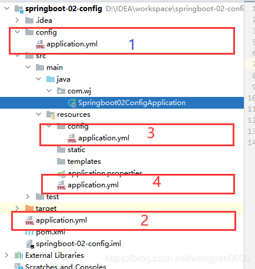
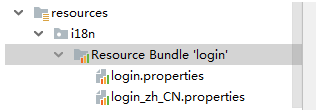
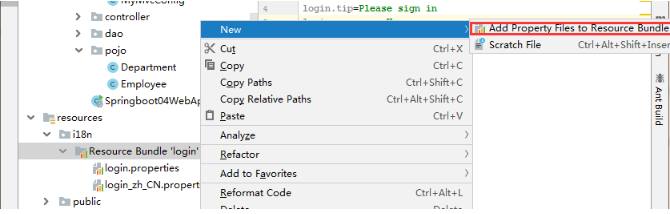
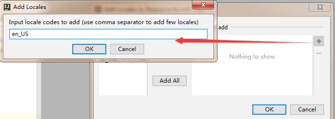
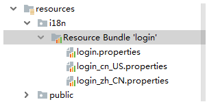
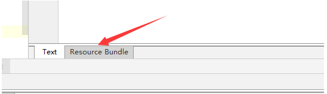
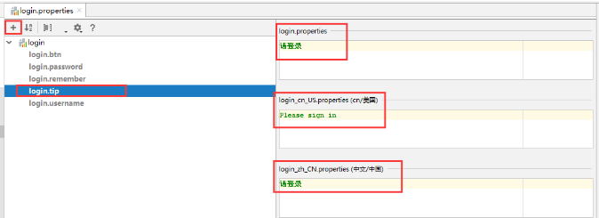
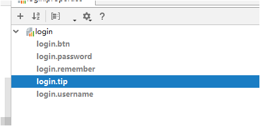
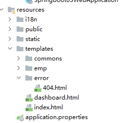

SpringBoot-狂神说
一、SpringBoot 简介
1、Spring 和 SpringBoot 的介绍
1、发展流程
微服务阶段
javase: OOP 面向对象编程
Mysql：持久化
HTML+css+js+jQuery框架: 视图，框架不熟练，CSS不好
javaWeb : 独立开发 MVC三层架构的网站，原始
SSM框架：简化了我们的开发流程，配置也开始较为复杂；
Sprig 再简化：Spring Boot-jar：内嵌tomcat ；微服务架构！
服务越来越多： Spring Cloud
2、Spring是为了解决企业级应用开发的复杂性而创建的，简化开发。
- 基于POJO的轻量级和最小侵入性编程，所有东西都是bean；
- 通过IOC，依赖注入（DI）和面向接口实现松耦合；
- 基于切面（AOP）和惯例进行声明式编程；
- 通过切面和模版减少样式代码，RedisTemplate，xxxTemplate；
3、Spring Boot的主要优点：
- 为所有Spring开发者更快的入门
- 开箱即用，提供各种默认配置来简化项目配置
- 内嵌式容器简化Web项目
- 没有冗余代码生成和XML配置的要求
2、第一个SpringBoot程序
1、使用 IDEA 直接创建项目
- 创建一个新项目
- 选择spring initalizr ， 可以看到默认就是去官网的快速构建工具那里实现
- 填写项目信息
- 选择初始化的组件（初学勾选 Web 即可）
- 填写项目路径
- 等待项目构建成功
2、修改项目的端口号
1 | #修改项目的端口号 |
3、修改 springboot启动图标（百度搜 springboot banner图标）
在resources 文件夹下 建立 banner.txt 文件，保存即可
3、运行原理探究
1、父依赖
- spring-boot-dependencies：核心依赖在父工程中！
- 我们在写或者引入一些Springboot依赖的时候，不需要指定版本，就因为有这些版本仓库
2、启动器 spring-boot-starter
- springboot-boot-starter-xxx，说白了就是Springboot的启动场景
- 比如spring-boot-starter-web，他就会帮我们自动导入web的所有依赖
- springboot会将所有的功能场景，都变成一个个的启动器
- 我们要使用什么功能，就只需要找到对应的启动器就好了
start
3、主程序
1、默认的主启动类
1 | //@SpringBootApplication 来标注一个主程序类 |
2、注解（@SpringBootApplication）
- 作用：标注在某个类上说明这个类是SpringBoot的主配置
- SpringBoot就应该运行这个类的main方法来启动SpringBoot应用；
1 | @SpringBootConfiguration |
3、结论：
- SpringBoot在启动的时候从类路径下的
META-INF/spring.factories中获取EnableAutoConfiguration指定的值 - 将这些值作为自动配置类导入容器 ， 自动配置类就生效 ， 帮我们进行自动配置工作；
- 以前我们需要自动配置的东西，现在springboot帮我们做了
- 整合JavaEE，整体解决方案和自动配置的东西都在
springboot-autoconfigure的jar包中； - 它会把所有需要导入的组件，以类名的方式返回，这些组件就会被添加到容器中
- 它会给容器中导入非常多的自动配置类 （xxxAutoConfiguration）, 就是给容器中导入这个场景需要的所有组件 ， 并自动配置，@Configuration（javaConfig） ；
- 有了自动配置类 ， 免去了我们手动编写配置注入功能组件等的工作；
二、yaml 语法
1、yaml语法学习
1、配置文件
SpringBoot使用一个全局的配置文件 ， 配置文件名称是固定的
2、配置文件的作用
修改SpringBoot自动配置的默认值，因为SpringBoot在底层都给我们自动配置好了；
3、yaml注入配置文件
在springboot项目中的resources目录下新建一个文件 application.yaml
编写一个实体类 Dog；（之前是通过@value 给属性赋值的
1
2
3
4
5
6
7
8
9
10
public class Dog {
String name;
int age;
}Person 类
1
2
3
4
5
6
7
8
9
10
11
12
13
14
15
16
17
18
19
20
21/*
@ConfigurationProperties作用：
将配置文件中配置的每一个属性的值，映射到这个组件中；
告诉SpringBoot将本类中的所有属性和配置文件中相关的配置进行绑定
参数 prefix = “person” : 将配置文件中的person下面的所有属性一一对应
*/
public class Person {
private String name;
private Integer age;
private Boolean happy;
private Date birth;
private Map<String,Object> maps;
private List<Object> lists;
private Dog dog;
}yaml配置
1
2
3
4
5
6
7
8
9
10
11
12
13person:
name: qinjiang
age: 3
happy: false
birth: 2000/01/01
maps: {k1: v1,k2: v2}
lists:
- code
- girl
- music
dog:
name: 旺财
age: 1
2、多环境切换
1、多配置文件
我们在主配置文件编写的时候，文件名可以是 application-{profile}.properties/yml, 用来指定多个环境版本；
例如：
application-test.properties 代表测试环境配置
application-dev.properties 代表开发环境配置
但是Springboot并不会直接启动这些配置文件，它默认使用application.properties主配置文件；
我们需要通过一个配置来选择需要激活的环境：
1 | #比如在配置文件中指定使用dev环境，我们可以通过设置不同的端口号进行测试； |
2、yaml的多文档块
和properties配置文件中一样，但是使用yml去实现不需要创建多个配置文件，更加方便了 !
1 | server: |
3、配置文件加载位置

1>2>3>4
优先级1：项目路径下的config文件夹配置文件
优先级2：项目路径下配置文件
优先级3：资源路径下的config文件夹配置文件
优先级4：资源路径下配置文件
三、自动配置原理
SpringBoot启动会加载大量的自动配置类
我们看我们需要的功能有没有在SpringBoot默认写好的自动配置类当中；
我们再来看这个自动配置类中到底配置了哪些组件；（只要我们要用的组件存在在其中，我们就不需要再手动配置了）、
给容器中自动配置类添加组件的时候，会从properties类中获取某些属性。我们只需要在配置文件中指定这些属性的值即可；
xxxxAutoConfigurartion：自动配置类；给容器中添加组件
xxxxProperties:封装配置文件中相关属性；
==查看自动配置类是否启动成功==
1 | #开启springboot的调试类 |
四、SpringBoot-Web
静态资源的导入
SpringBoot中，SpringMVC的web配置都在 WebMvcAutoConfiguration 这个配置类里面；
可以设置项目的根路径
1
server.servlet.context-path=/wj
以下四个目录存放的静态资源可以被我们识别：
1
2
3
4"classpath:/META-INF/resources/",
"classpath:/resources/",
"classpath:/static/",
"classpath:/public/"可以自定义静态资源路径(ResourceProperties.class)
1
spring.resources.static-locations=classpath:/coding/,classpath:/ss/
1.首页
1.欢迎页：静态资源文件夹下的所有 index.html 页面被”/**”映射；
1 | private Resource getIndexHtml(String location) { |
2.jsp、模板引擎(thymeleaf)
引入 thymeleaf （springboot 推荐使用 thymeleaf）
1
2
3
4<dependency>
<groupId>org.springframework.boot</groupId>
<artifactId>spring-boot-starter-thymeleaf </artifactId>
</dependency>在HTML文件中引入 thymeleaf 的命名空间约束
1
<html lang="en" xmlns:th="http://www.thymeleaf.org">
thymeleaf 语法
- 我们可以使用任意的 th:attr 来替换 HTML中的任意属性
- ${…}获取变量的值
- #{…} 获取国际化的一些消息
- @{…} 定义URL
- ~{…}：片段引用表达式
- 内置的基本对象
- 内置的工具对象
3.国际化
我们在resources资源文件下新建一个i18n（internationalization缩写）目录，存放国际化配置文件
建立一个
login.properties文件，还有一个login_zh_CN.properties；发现IDEA自动识别了我们要做国际化操作；文件夹变了！
我们可以在这上面去新建一个文件；

弹出如下页面：我们再添加一个英文的；

这样就快捷多了！

接下来，我们就来编写配置，我们可以看到idea下面有另外一个视图；

这个视图我们点击 + 号就可以直接添加属性了；我们新建一个login.tip，可以看到边上有三个文件框可以输入

然后依次添加其他页面内容即可！

然后去查看我们的配置文件；
login.properties ：
1
2
3
4
5login.btn=登录
login.password=密码
login.remember=记住我
login.tip=请登录
login.username=用户名英文
1
2
3
4
5login.btn=Sign in
login.password=Password
login.remember=Remember me
login.tip=Please sign in
login.username=Username中文
1
2
3
4
5login.btn=登录
login.password=密码
login.remember=记住我
login.tip=请登录
login.username=用户名配置文件生效探究
我们去看一下SpringBoot对国际化的自动配置！这里又涉及到一个类：
MessageSourceAutoConfiguration里面有一个方法，这里发现SpringBoot已经自动配置好了管理我们国际化资源文件的组件ResourceBundleMessageSource；配置页面国际化值
1
2
3
4
5
6
7
8
9
10
11
12
13
14
15
16
17
18
19
20
21
22
23
24
25
26
27
28
29
30
31
32
33
34
35
36
37
<html lang="en" xmlns:th="http://www.thymeleaf.org">
<head>
<meta http-equiv="Content-Type" content="text/html; charset=UTF-8">
<meta name="viewport" content="width=device-width, initial-scale=1, shrink-to-fit=no">
<meta name="description" content="">
<meta name="author" content="">
<title>Signin Template for Bootstrap</title>
<!-- Bootstrap core CSS -->
<link th:href="@{/css/bootstrap.min.css}" rel="stylesheet">
<!-- Custom styles for this template -->
<link th:href="@{/css/signin.css}" rel="stylesheet">
<link rel="icon" type="image/x-icon" href="../../public/favicon.ico">
</head>
<body class="text-center">
<form class="form-signin" th:action="@{/user/login}">
<img class="mb-4" th:src="@{/img/bootstrap-solid.svg}" alt="" width="72" height="72">
<h1 class="h3 mb-3 font-weight-normal" th:text="#{login.tip}">Please sign in</h1>
<p style="color:red;" th:text="${msg}" th:if="${not #strings.isEmpty(msg)}"></p>
<label class="sr-only" th:text="#{login.username}">Username</label>
<input type="text" name="username" class="form-control" th:placeholder="#{login.username}" required="" autofocus="">
<label class="sr-only" th:text="#{login.password}">Password</label>
<input type="password" name="password" class="form-control" th:placeholder="#{login.password}" required="">
<div class="checkbox mb-3">
<label>
<input type="checkbox" value="remember-me"> [[#{login.remember}]]
</label>
</div>
<button class="btn btn-lg btn-primary btn-block" type="submit">[[#{login.btn}]]</button>
<p class="mt-5 mb-3 text-muted">© 2017-2018</p>
<a class="btn btn-sm" th:href="@{/index.html(l='zh_CN')}">中文</a>
<a class="btn btn-sm" th:href="@{/index.html(l='en_US')}">English</a>
</form>
</body>
</html>配置国际化解析
1
2
3
4
5
6
7
8
9
10
11
12
13
14
15
16
17
18
19
20
21
22
23
24
25
26
27
28package com.wj.config;
import org.springframework.util.StringUtils;
import org.springframework.web.servlet.LocaleResolver;
import javax.servlet.http.HttpServletRequest;
import javax.servlet.http.HttpServletResponse;
import java.util.Locale;
public class MyLocaleResolver implements LocaleResolver {
public Locale resolveLocale(HttpServletRequest httpServletRequest) {
// 获取请求中的语言参数连接
String language = httpServletRequest.getParameter("l");
Locale locale = Locale.getDefault();
if (!StringUtils.isEmpty(language)) {
// zh_CN
String[] split = language.split("_");
// 国家 地区
locale = new Locale(split[0], split[1]);
}
return locale;
}
public void setLocale(HttpServletRequest httpServletRequest, HttpServletResponse httpServletResponse, Locale locale) {
}
}为了让我们的区域化信息能够生效，我们需要再配置一下这个组件！在我们自己的
MvcConofig下添加bean；1
2
3
4
public LocaleResolver localeResolver() {
return new MyLocaleResolver();
}- 所有静态资源 都需要 thymeleaf 接管
页面国际化需要 配置 i18n 文件
- 我们如果需要在项目中进行按钮自动切换，我们需要定义一个组件
LocalResolver - 记得将自己写的组件配置到spring容器
@Bean
404 页面处理

在 Template 下建立 error 文件夹，并新建相应的页面 （404.html 500.html）
- 我们如果需要在项目中进行按钮自动切换，我们需要定义一个组件
五、jdbc
1、整合 jdbc
1、导入依赖
1 | <dependency> |
2、配置数据库连接
1 | spring: |
3、配置完这一些东西后，我们就可以直接去使用了，因为SpringBoot已经默认帮我们进行了自动配置；去测试类测试一下
1 |
|
4、Spring Boot 2.2.5 默认使用HikariDataSource 数据源，
HikariDataSource 号称 Java WEB 当前速度最快的数据源，相比于传统的 C3P0 、DBCP、Tomcat jdbc 等连接池更加优秀；
5、可以使用 spring.datasource.type 指定自定义的数据源类型，值为 要使用的连接池实现的完全限定名。
6、配置属性class
1 | DataSourceAutoConfiguration.class |
2、使用 Druid
1.Druid 简介
- Spring Boot 2.0 以上默认使用 Hikari 数据源，可以说 Hikari 与 Driud 都是当前 Java Web 上最优秀的数据源，我们来重点介绍 Spring Boot 如何集成 Druid 数据源，如何实现数据库监控。
- Druid 可以很好的监控 DB 池连接和 SQL 的执行情况，天生就是针对监控而生的 DB 连接池。
- Druid已经在阿里巴巴部署了超过600个应用，经过一年多生产环境大规模部署的严苛考验。
2.配置数据源
导入 依赖
1
2
3
4
5<dependency>
<groupId>com.alibaba</groupId>
<artifactId>druid</artifactId>
<version>1.1.10</version>
</dependency>使用type 来指定数据源
1
type: com.alibaba.druid.pool.DruidDataSource # 自定义数据源
Druid 的专有配置
1
2
3
4
5
6
7
8
9
10
11
12
13
14
15
16
17
18
19
20
21
22
23
24
25
26
27
28
29
30spring:
datasource:
username: root
password: 123456
#?serverTimezone=UTC解决时区的报错
url: jdbc:mysql://localhost:3306/springboot?serverTimezone=UTC&useUnicode=true&characterEncoding=utf-8
driver-class-name: com.mysql.cj.jdbc.Driver
type: com.alibaba.druid.pool.DruidDataSource
#Spring Boot 默认是不注入这些属性值的，需要自己绑定
#druid 数据源专有配置
initialSize: 5
minIdle: 5
maxActive: 20
maxWait: 60000
timeBetweenEvictionRunsMillis: 60000
minEvictableIdleTimeMillis: 300000
validationQuery: SELECT 1 FROM DUAL
testWhileIdle: true
testOnBorrow: false
testOnReturn: false
poolPreparedStatements: true
#配置监控统计拦截的filters，stat:监控统计、log4j：日志记录、wall：防御sql注入
#如果允许时报错 java.lang.ClassNotFoundException: org.apache.log4j.Priority
#则导入 log4j 依赖即可，Maven 地址：https://mvnrepository.com/artifact/log4j/log4j
filters: stat,wall,log4j
maxPoolPreparedStatementPerConnectionSize: 20
useGlobalDataSourceStat: true
connectionProperties: druid.stat.mergeSql=true;druid.stat.slowSqlMillis=500导入 log4 j的依赖
1
2
3
4
5<dependency>
<groupId>log4j</groupId>
<artifactId>log4j</artifactId>
<version>1.2.17</version>
</dependency>
3.配置数据源的监控信息
1 | package com.wj.config; |
- 配置完成之后 访问 ：http://localhost:8080/druid/login.html
六、Mybatis
导入mybatis所需的依赖
1
2
3
4
5<dependency>
<groupId>org.mybatis.spring.boot</groupId>
<artifactId>mybatis-spring-boot-starter</artifactId>
<version>2.1.3</version>
</dependency>配置数据库的信息
1
2
3
4
5
6
7
8
9
10spring:
datasource:
username: root
password: 123456
url: jdbc:mysql://localhost:3306/ssmbuild?serverTimezone=UTC
driver-class-name: com.mysql.cj.jdbc.Driver
# mybatis 整合
mybatis:
type-aliases-package: com.wj.pojo
mapper-locations: classpath:mybatis/mapper/*.xml创建实体（导入lombok）
1
2
3
4
5
6
7
8
9
10
11
12
13
14package com.wj.pojo;
import lombok.AllArgsConstructor;
import lombok.Data;
import lombok.NoArgsConstructor;
public class Users {
int id;
String username;
String password;
}创建mapper目录以及相应的 mapper接口
1
2
3
4
5
6
7
8
9
10
11
12
13
14
15
16
17
18
19
20
21
22package com.wj.mapper;
import com.wj.pojo.Users;
import org.apache.ibatis.annotations.Mapper;
import org.springframework.stereotype.Repository;
import java.util.List;
public interface UserMapper {
List<Users> queryUserList();
Users queryUserById(int id);
int addUser(Users users);
int updateUsers(Users users);
int deleteUsers(int id);
}对应到的mapper映射文件
1
2
3
4
5
6
7
8
9
10
11
12
13
14
15
16
17
18
19
<mapper namespace="com.wj.mapper.UserMapper">
<select id="queryUserList" resultType="Users">
select * from users
</select>
<select id="queryUserById" resultType="int">
select * from users where id= #{id}
</select>
<insert id="addUser" parameterType="Users">
insert into users (id,username,password) values (#{id},#{username},#{password});
</insert>
<update id="updateUsers" parameterType="Users">
update users set username = #{username},password=#{password} where id = #{id}
</update>
<delete id="deleteUsers" parameterType="int">
delete from users where id=#{id}
</delete>
</mapper>maven 配置资源过滤问题
1
2
3
4
5
6
7
8
9<resources>
<resource>
<directory>src/main/java</directory>
<includes>
<include>**/*.xml</include>
</includes>
<filtering>true</filtering>
</resource>
</resources>
 微信
微信 支付宝
支付宝